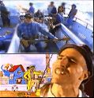
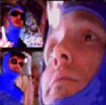

|  |
John the Fisherman was Primus's first official video (a demo for Too Many Puppies exists, but was never officially released). Shot on Les's Fishing Boat, it featured a cameo by Kirk Hammett and Ler's Purple Hair. This video appears on the Cheesy Home Video with an introduction by Les of "I Don't Wanna Introduce The video for John the Fisherman...Fuck That!". |
| Jerry Was a Racecar Driver featered Primus in concert at the legendary Phoenix Theater. Les wears his classic white Long Johns, and needless to say, the moshing at the concert is quite heavy. The introduction shows the infamous Bob Cock getting an order of Nachos, only to drop them after a collision with Ler on a skateboard. | |
Tommy the Cat is possibly Primus's most bizarre video. Les plays a bartender serving milk, which is mixed with the rest of the Band and a cartoon. |
|
| My Name is Mud was the first Primus video to get heavy play on MTV, and likewise was reviewed by Beavis and Butt-head. Many fans were introduced to Les Claypool's hard, slappin' bass and masterful story telling with this video; the song was a tribute to the director of Evil Dead. | |
| Like Jerry, the video for DMV takes place mostly in concert. A great example of the sheer energy of Primus, Les does the famous "Primus Jig" towards the end. MTV bleeped out both "THC" and "Smoke", foreshadowing future censorship for the Wynona video two years later. | |
| Very few have been lucky enough to see the video for Mr. Krinkle, as it is by far the least played. As Les put it, "I put my heart and soul into that video, and they played it like two times." The video featured Les in a pig suit playing the upright with all types of weird things going on in the background. | |
|  |
Simply put, Riddles Are Abound Tonight was a weird video. Dressed in blue bodysuits and ridding stationary bicyles, Sausage performs the song while hovering above a Disco dancer and a 1700's ball. Thanks to Beavis and Butt-head, Sausage became better known as the "Seminifious Tubloidial Buttnoids", and the video was responsible for insiring Mike Judge to create The Great Cornholio. |
| Wynona's Big Brown Beaver is considered by most to be the best video. Dressed as Cowboys in plastic suits resembling the Duracell Family, it mixed the threesome's adventures with cartoons. Unfortuneately, MTV both censored the video and restricted its playing time to past midnight, much to the dismay of the band. Despite this, it was still was the most requested video of 1995. | |
| Southbound Pacyderm was done almost entirely in claymation. In the video, a safari hunter persues a flying Elephant and Hippo who are aided by a scientist. Like Mr. Krinkle, this video was played only a few times after its premeire. | |
| Shake Hands with Beef marked the debut of Brain in a Primus video. The video took place at a trailer park barbeque, with the guys as little insects performing on a garbage can lid. Ler flew during his solo, but Les was fried by a bug zapper at the end. | |
| Over the Falls reflected the old-fashioned, acoustic feel of 1997's Brown Album. Dressed in early 1900's duds, the band performs as several Whoudina-bees attempt to cross Niagara Falls in homemade contraptions. Many of the tools came from Les's Grandfather's (Captain Peirce) garage. | |
| The Buzzards of Green Hill video perhaps stayed closest to the song. It primary shows Les and the Frog Brigade displaying the lyrics on cue cards, but mixes in "home movie" shots of Green Hill Road and the Buzzards that patrol it, and a little of Les playing. |